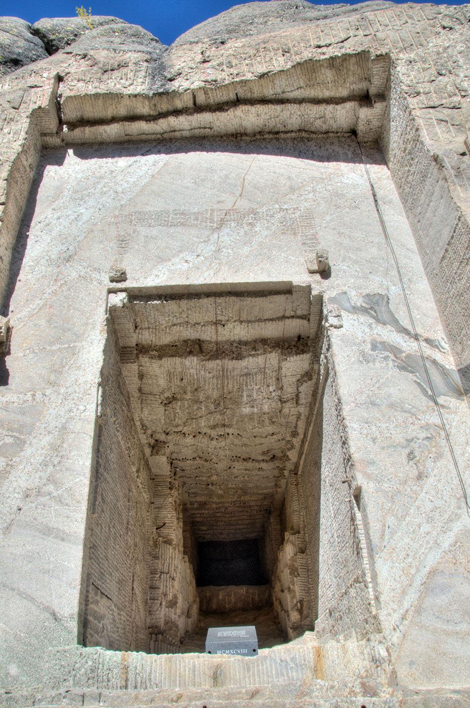

ACM-ICPC World Finals 2017 · Problem I

By now you have probably heard that there is a spectacular stone sculpture featuring four famous U.S. presidents at Mount Rushmore. However, very few people know that this monument contains a secret chamber. This sounds like something out of a plot of a Hollywood movie, but the chamber really exists. It can be found behind the head of Abraham Lincoln and was designed to serve as a Hall of Records to store important historical U.S. documents and artifacts. Historians claim that the construction of the hall was halted in 1939 and the uncompleted chamber was left untouched until the late 1990s, but this is not the whole truth.
In 1982, the famous archaeologist S. Dakota Jones secretly visited the monument and found that the chamber actually was completed, but it was kept confidential. This seemed suspicious and after some poking around, she found a hidden vault and some documents inside. Unfortunately, these documents did not make any sense and were all gibberish. She suspected that they had been written in a code, but she could not decipher them despite all her efforts.
Earlier this week when she was in the area to follow the ACM-ICPC World Finals, Dr. Jones finally discovered the key to deciphering the documents, in Connolly Hall of SDSM&T. She found a document that contains a list of translations of letters. Some letters may have more than one translation, and others may have no translation. By repeatedly applying some of these translations to individual letters in the gibberish documents, she might be able to decipher them to yield historical U.S. documents such as the Declaration of Independence and the Constitution. She needs your help.
You are given the possible translations of letters and a list of pairs of original and deciphered words. Your task is to verify whether the words in each pair match. Two words match if they have the same length and if each letter of the first word can be turned into the corresponding letter of the second word by using the available translations zero or more times.
The first line of input contains two integers m (1 ≤ m ≤ 500) and n (1 ≤ n ≤ 50), where m is the number of translations of letters and n is the number of word pairs. Each of the next m lines contains two distinct space-separated letters a and b, indicating that the letter a can be translated to the letter b. Each ordered pair of letters (a, b) appears at most once. Following this are n lines, each containing a word pair to check. Translations and words use only lowercase letters ‘a’–‘z’, and each word contains at least 1 and at most 50 letters.
For each pair of words, display yes if the two words match, and no otherwise.
9 5 c t i r k p o c r o t e t f u h w p we we can the work people it of out the
yes no no yes yes
3 3 a c b a a b aaa abc abc aaa acm bcm
yes no yes